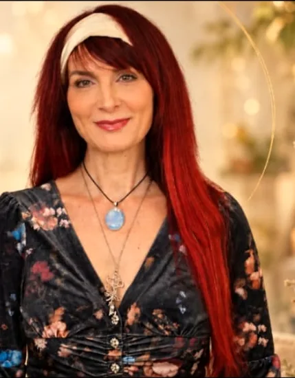

Energiearbeit · Körperwahrnehmung · Kreativer Ausdruck
Zwischen Verstehen und Erleben liegen oft Welten.
Spürst du, dass sich etwas in deinem Leben verändern möchte? Ich begleite dich mit schamanischer Energiearbeit, feiner Körperwahrnehmung und kreativem Ausdruck – achtsam und in deinem Tempo.

IAnkommen
Veränderung beginnt dort, wo wir anfangen, uns selbst wahrzunehmen.
Energie ist nichts Fremdes. Sie zeigt sich in deiner Wahrnehmung – oft lange bevor du Worte dafür hast.
Du spürst, wie sich ein Raum anfühlt.
Du bemerkst, was eine Begegnung in dir auslöst.
Dein Körper reagiert – manchmal leise, manchmal deutlich.
Energie braucht keinen Beweis. Nur deine Bereitschaft, sie wahrzunehmen.

Vielleicht erkennst du dich hier wieder …
- Du funktionierst – aber du spürst dich kaum noch.
- Alte Muster wiederholen sich, obwohl du sie längst verstanden hast.
- Eine Beziehung oder ein Mensch hält dich innerlich noch fest.
- Du stehst an einem Umbruch und suchst deine Richtung.
- Du hast das Gefühl, ein Teil von dir ist auf dem Weg verloren gegangen.
- Du möchtest dich wieder mehr mit dir, der Natur und deiner Kraft verbinden.
Dann bist du hier richtig.

IITiefer schauen
Sichtbar ist nur die Spitze des Eisbergs.
Was wir nach außen zeigen, ist oft nur ein kleiner Teil dessen, was in uns wirkt. Darunter liegen Prägungen, alte Verletzungen, ungelebte Gefühle und Überzeugungen, die uns leise steuern.
Wenn wir uns trauen, auch dorthin zu schauen, kann Neues entstehen.

Was im Schatten liegt, möchte gesehen und angenommen werden.
IIIGanz werden
Ich sehe dich als ganzen Menschen.
Körper, Geist, Emotionen und Energie gehören zusammen. Wenn du zu mir kommst, schaue ich nicht nur auf ein Thema – sondern darauf, was dich bewegt, was dich geprägt hat und was sich jetzt zeigen möchte.
Der Körper lügt nicht. Er zeigt uns, was wir im Alltag oft überhören.
Was macht schamanische Energiearbeit besonders?
Du verstehst – und trotzdem bleibt es gleich.
Wir können unsere Geschichte kennen und vieles verstanden haben. Und reagieren doch immer wieder ähnlich.
Wir gehen dorthin, wo das Muster beginnt.
Die Arbeit setzt tiefer an als beim Reden – dort, wo Erfahrungen im Körper und im Erleben gespeichert sind.
Veränderung darf erfahrbar werden.
Es geht nicht nur ums Verstehen, sondern ums Erleben. So kann sich Festgehaltenes auf natürliche Weise lösen.
Wir sehen die Welt durch die Brille unserer Erfahrungen. Klärt sich etwas in uns, verändert sich oft auch unser Blick – unverschleiert, wahr.
IVNeu beginnen
Deine Entscheidung. Jeden Tag.
In der Tradition der Medizinleute der Anden und des Amazonas ist Gleichgewicht kein Zustand, sondern ein fortlaufender Weg. Es geht darum, achtsam mit dir zu bleiben – und wahrzunehmen, was dich aus der Balance bringt, bevor es laut wird.
Im Funktionieren
- Du hörst erst hin, wenn es nicht mehr anders geht.
- Du fühlst dich erschöpft und innerlich unruhig.
- Du verlierst den Blick für dich.
- Veränderung kommt erst unter Druck.
Im Wahrnehmen
- Du nimmst feine Signale wahr und schenkst ihnen Beachtung.
- Du stärkst deine innere Balance.
- Du gestaltest dein Leben bewusst.
- Veränderung darf früh und sanft geschehen.
Du hast die Wahl. Sie ist ein Geschenk an dein zukünftiges Ich.
Meine Begleitungen
Basierend auf Werkzeugen der Energiearbeit der Anden und des Amazonas.
Illumination
Das Herzstück: Klärung deines Energiefeldes.
Entkopplung
Raum zum Durchatmen, wenn Anspannung dein Leben bestimmt.
Cord Cutting
Energetische Bänder lösen, die dich festhalten.
Extraktion
Lösen, was sich schwer und fremd anfühlt.
Rückverbindung mit Anteilen von dir
Eine schamanische Reise zurück zu dir.
Täter-Opfer-Retter-Dreieck
Deine Rollen erkennen und verlassen.
Arbeit mit deiner inneren Landkarte
Alte Wege erkennen, neue entdecken.

Ich bin Katharina.
Mutter von drei erwachsenen Kindern, viele Jahre pädagogisch tätig – und selbst durch Krisen gegangen. Mein Weg hat mich zur Energiearbeit der Anden und des Amazonas geführt. Heute begleite ich Menschen auf ihrem eigenen Weg.
Veränderung kann niemand für dich machen. Die einzige Person, die wirklich verändern kann, bist du selbst. Ich begleite dich dabei.
Bereit für deinen nächsten Schritt?
Im kostenlosen Kennenlernen schauen wir gemeinsam, ob und wie ich dich begleiten kann. Unverbindlich und in Ruhe.
Ich freue mich auf dich.